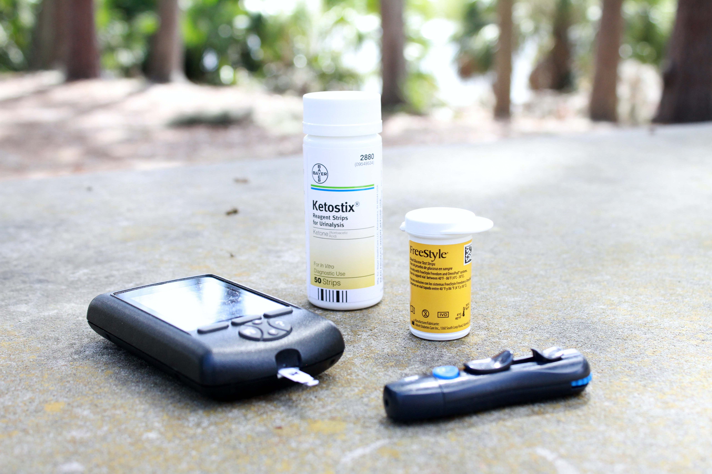
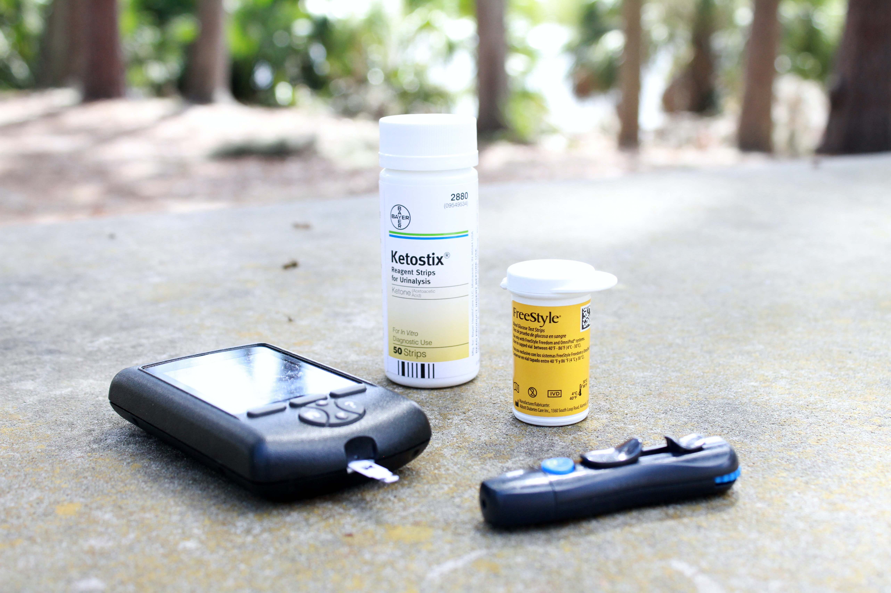

During the first wave of COVID-19 infections in the US, Nursing homes across the country
became ground zero for the transmission and death from the disease.
Multiple factors can be linked to why nursing homes were hot spots in the pandemic,
such as congregate living, underlying health conditions in the elderly population,
amongst others.
This project utilizes Nursing Home COVID-19 Public surveillance data to investigate the extent of the infections, recoveries,
mortality, and vaccination rates across various nursing centers in the US. While the long-term clinical and social implications
of the pandemic are still being uncovered, the results from this project can serve as a decision-making guide on how to
effectively allocate resources and mitigate excessive risks for long-term care facility preparedness in the event of a pandemic.


Cervical cancer kills about 4,000 women in the U.S. and about 300,000 women worldwide.
Studies have shown that high sexual activity Human Papillloma Virus (HPV) is one of the key factors
that increases the risk of having cervical cancer.
This project aims to build and train an XGBoost model to predict cervical cancer in 859 patients.

Cardiovascular disease (CVD) remains as the leading cause of death in the United States, accounting for 928,741 deaths in the year 2020.
This project aims to train several machine learning classifiers to detect and classify cardiovascular disease and cancer on autopilot using the AutoGluon Machine Learning library.
This case study aims to build, train and test an artificial neural network model in Keras and Tensorflow to predict insurance cost based on customer features such as age, gender, Body Mass Index (BMI), number of children, smoking habits, and geo-location.

This project analyzes the transmission of corona virus across the globe and train a time-series forcasting model (Prophet) to get the projection of corona virus-related cases for the next month in the United States.
 This portfolio contains multiple dashboards projects including Hospital Length of Stay, Readmissions, Mortality rates, Emergency Department Throughput,
Ambulatory Access, Hypertension Management, Physician Specialty Performance.

This portfolio contains multiple dashboards projects including Hospital Length of Stay, Readmissions, Mortality rates, Emergency Department Throughput,
Ambulatory Access, Hypertension Management, Physician Specialty Performance.

This project aims to train Machine Learning classification models (Logistic Regression, Decision Tree, & Random Forest)
to predict whether a patient is at risk of developing diabetes based on their symptoms.
This project will be useful to clinicians, as it will help them understand how to better avoid missing the False Positive cases who may go undiagnosed.

Masters Degree Final Project completed May 2016, looking at the cascade of care of Latent Tuberculosis Infection (LTBI) Therapy among HIV-Coinfected patients compared to other high risk patients with chronic conditions.
- © Christine IK Portfolio
- Design: HTML5 UP